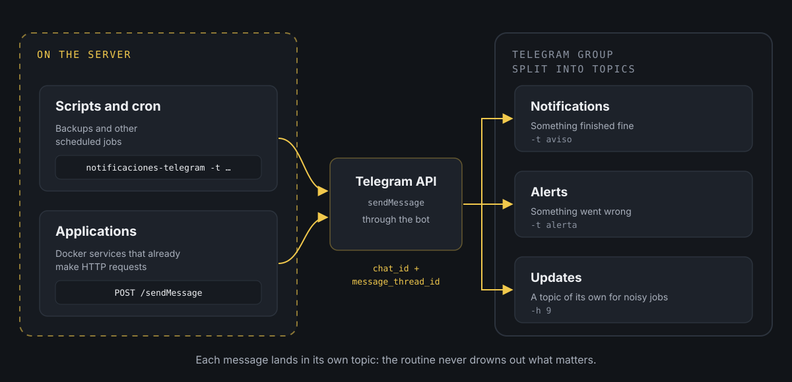

Telegram notifications from your own processes and applications.
At home I have a server with quite a few things running on their own: backups that kick off in the early hours, a fan that switches itself on to stop the server from overheating, Docker applications that watch folders and process whatever turns up... All very convenient, until something stopped working and I didn't find out.
A backup that had been failing for a week, or an application stuck waiting for me to do something. I would only discover it when I needed it, which tends to be the worst possible moment.
The dilemma
The first thing that comes to mind is setting up dashboards. With Grafana and Prometheus you get graphs of almost everything happening on the server (CPU, memory, disk, containers...) and alerts when something goes out of the ordinary. For the standard stuff it is the solid solution, and there is no point reinventing it.
The problem is your own processes. A backup script or an application I wrote myself doesn't have a dashboard waiting for it. For Grafana to see them I would have to expose metrics from each one, set up an exporter or write custom alert rules, and that is a lot of work just to know whether a backup finished properly.
The middle ground
So I split it: Grafana and Prometheus for what they already cover well, and for the home-made stuff, a home-made notification. The process itself tells me how it went, at the moment it happens.
To receive those notifications I chose Telegram. I already had it on my phone and my computer, and its bot API is as simple as it gets: one HTTP request with the text and that's it. So I set up a bot that, among other things, notifies me in a group with just the two of us in it.
The key is that the group has topics enabled. A group with topics works like a small forum: each topic is its own thread, with its own messages and notifications. I have one for routine notifications (something finished fine), another for alerts (something went wrong) and a few more for specific jobs that generate a lot of traffic and that I don't want mixed in with everything else.
And here is the point of splitting it up: Telegram lets you mute each topic separately. The informative topics (notifications, updates) are muted, so the messages arrive but don't make a sound or interrupt me. I have a look whenever I feel like it. The alerts topic, on the other hand, has sound on, because whatever lands there needs me to do something.
If everything went to the same place, I would have to choose between two evils: mute the whole group and risk missing a failure, or leave it ringing and get used to ignoring it. And a notification you get used to ignoring is the same as having no notification at all. Since it's a group with only the bot and me, I can set it up however I like without bothering anyone.
If you don't have a bot yet, I explain it step by step in how to create a Telegram bot. Here I assume you already have its token, that you have created a group, enabled Topics when editing it and added the bot as a member.
What the flow looks like

There are two ways into the group. The server scripts use a small command that does it in one line, and the applications call the API directly. In the end both do the same thing: tell Telegram which group and which topic each message goes to.
Getting the IDs
To send a message to a specific topic you need two pieces of information: the group ID (chat_id) and the topic ID (message_thread_id). Neither is shown in the Telegram app, but the bot itself can give them to you.
By default, bots have privacy mode switched on: in a group they only receive commands addressed to them. So write a command mentioning the bot in each topic, for example /start@my_alerts_bot. Then ask the API for the latest messages it has received:
curl -s "https://api.telegram.org/bot<TOKEN>/getUpdates" | python3 -m json.toolYou should see something like this (trimmed):
{ "ok": true, "result": [ { "update_id": 812345671, "message": { "message_id": 15, "message_thread_id": 4, "chat": { "id": -1001234567890, "title": "Home server", "is_forum": true, "type": "supergroup" }, "is_topic_message": true, "text": "/start@my_alerts_bot" } } ]}What you are after is in two places:
chat.idis the group ID. In groups with topics it is negative and starts with-100.message_thread_idis the ID of the topic you wrote in. Repeat the command in each topic and note down each number.
The General topic is the exception: it has no message_thread_id. To write in it, just don't send one.
There is another way to get the topic without the API. If you copy the link of any message in a topic (right-click and Copy Message Link), you get something like this:
https://t.me/c/1234567890/4/15The first number is the group without the -100 in front, the second is the topic and the third, the message.
If getUpdates returns an empty list, the most likely reason is that the command didn't mention the bot. And if it returns a 409 error, that bot already has a webhook set up (another application uses it to receive messages). In that case, the easiest thing is to get the IDs from the link.
One command for every script
For bash scripts I didn't want to repeat the curl call in each one, so I put it all into a command, notificaciones-telegram. The details live in a separate configuration file, /etc/notificaciones/telegram.conf, which is the only thing you need to protect:
BOT_TOKEN="123456789:AAE-example-token"CHAT_ID="-1001234567890"THREAD_ID_AVISO="4"THREAD_ID_ALERTA="6"And this is the command:
#!/bin/bash## notificaciones-telegram## Sends a message to a Telegram group with topics: notices go to the# notifications topic and alerts to the alerts topic, unless another# topic is given with -h.## Usage:# notificaciones-telegram -t aviso -m "Backup finished"# notificaciones-telegram -t alerta -m "Backup failed"# notificaciones-telegram -t aviso -m "Message" -h 9 (forces topic 9)# notificaciones-telegram -t aviso -m "<b>Bold</b>" -H (HTML message)# set -euo pipefail CONFIG_FILE="/etc/notificaciones/telegram.conf"MAX_CARACTERES=4000USO='Usage: notificaciones-telegram -t <aviso|alerta> -m "message" [-h thread_id] [-H]' if [[ ! -r "$CONFIG_FILE" ]]; then echo "ERROR: Cannot read $CONFIG_FILE" >&2 exit 1fi # Defines BOT_TOKEN, CHAT_ID, THREAD_ID_AVISO and THREAD_ID_ALERTAsource "$CONFIG_FILE" TIPO=""MENSAJE=""THREAD_ID=""PARSE_MODE="" while getopts "t:m:h:H" opt; do case "$opt" in t) TIPO="$OPTARG" ;; m) MENSAJE="$OPTARG" ;; h) THREAD_ID="$OPTARG" ;; H) PARSE_MODE="HTML" ;; *) echo "$USO" >&2; exit 1 ;; esacdone if [[ -z "$TIPO" || -z "$MENSAJE" ]]; then echo "ERROR: Missing parameters." >&2 echo "$USO" >&2 exit 1fi # The type is always validated. If no topic was forced with -h, the type's one is used.case "$TIPO" in aviso) THREAD_ID="${THREAD_ID:-$THREAD_ID_AVISO}" ;; alerta) THREAD_ID="${THREAD_ID:-$THREAD_ID_ALERTA}" ;; *) echo "ERROR: Invalid type '$TIPO'. Use 'aviso' or 'alerta'." >&2 exit 1 ;;esac # Telegram does not accept messages longer than 4096 charactersif (( ${#MENSAJE} > MAX_CARACTERES )); then MENSAJE="${MENSAJE:0:MAX_CARACTERES}[...] (truncated)"fi DATOS=(--data-urlencode "chat_id=${CHAT_ID}" --data-urlencode "text=${MENSAJE}")if [[ -n "$THREAD_ID" ]]; then DATOS+=(--data-urlencode "message_thread_id=${THREAD_ID}")fiif [[ -n "$PARSE_MODE" ]]; then DATOS+=(--data-urlencode "parse_mode=${PARSE_MODE}")fi # The URL contains the token: it is passed to curl through standard input (-K -)# so it doesn't show up in the process listRESPUESTA=$(curl -sS --max-time 15 "${DATOS[@]}" -K - \ <<< "url = \"https://api.telegram.org/bot${BOT_TOKEN}/sendMessage\"") || { echo "ERROR: Could not connect to Telegram." >&2 exit 1} if [[ "$RESPUESTA" != *'"ok":true'* ]]; then echo "ERROR sending the notification to Telegram:" >&2 echo "$RESPUESTA" >&2 exit 1fi exit 0This is how it works:
-tis mandatory and chooses the type:aviso(notice) goes to the notifications topic andalerta(alert), to the alerts topic.-mis the message text.-hforces a different topic, for example one dedicated to a specific job. The type is still validated, so nothing slips through by mistake.-Hsays the message is in HTML, so you can use bold or links. Without it, the text is sent as it is, whatever it contains.
To install it, copy the script, create the configuration file and make it readable only by the user that runs the scripts (if that isn't root, add a chown to that user):
sudo install -m 755 notificaciones-telegram /usr/local/bin/sudo mkdir -p /etc/notificacionessudo nano /etc/notificaciones/telegram.confsudo chmod 600 /etc/notificaciones/telegram.confTo test it:
notificaciones-telegram -t aviso -m "Hello from the server 👋"If all goes well it says nothing and the message appears in the notifications topic. If something fails, it shows Telegram's response. For example, with a topic that doesn't exist:
ERROR sending the notification to Telegram:{"ok":false,"error_code":400,"description":"Bad Request: message thread not found"}Notifications from scheduled jobs
Where I get the most out of it is with cron jobs. A typical example is a backup that lets me know whether it went well or failed:
#!/bin/bash# backup-photos: copies the photo folder to the backup disk if rsync -a --delete /srv/photos/ /mnt/backups/photos/ 2> /tmp/backup-photos.log; then notificaciones-telegram -t aviso -m "✅ Photo backup finished"else notificaciones-telegram -t alerta -m "❌ Photo backup failed:$(tail -n 5 /tmp/backup-photos.log)"fiIt is scheduled like any other job, in this case every night at half past three:
30 3 * * * /usr/local/bin/backup-photosFor jobs that generate lots of messages, like one that reports every new thing it finds, I use -h with a topic of their own. That way they don't flood the notifications topic:
notificaciones-telegram -t aviso -h 9 -m "📖 New chapter available"From applications: straight to the API
Applications are a different story. They usually run in Docker containers, which can't see the server's commands, and they already know how to make HTTP requests. For them it makes no sense to go through the script: the natural thing is to call the API.
For example, an application that watches a folder and lets me know when a new book arrives that I need to review. In Python the standard library is enough, with nothing to install:
import jsonimport loggingimport osimport urllib.parseimport urllib.request log = logging.getLogger(__name__) TOKEN = os.environ["TELEGRAM_BOT_TOKEN"]CHAT_ID = os.environ["TELEGRAM_CHAT_ID"]THREAD_ID_AVISO = os.environ.get("TELEGRAM_THREAD_ID_AVISO")THREAD_ID_ALERTA = os.environ.get("TELEGRAM_THREAD_ID_ALERTA") def notificar(texto, thread_id=THREAD_ID_AVISO): """Sends a message to the group. If it fails, it logs it and carries on.""" datos = {"chat_id": CHAT_ID, "text": texto[:4000]} if thread_id: datos["message_thread_id"] = thread_id peticion = urllib.request.Request( f"https://api.telegram.org/bot{TOKEN}/sendMessage", data=urllib.parse.urlencode(datos).encode(), ) try: with urllib.request.urlopen(peticion, timeout=10) as respuesta: return json.load(respuesta).get("ok", False) except Exception as error: log.warning("Could not send the notification: %s", error) return FalseAnd wherever the application detects the new book:
notificar(f"📚 New book waiting for review: {titulo}")Another case I have running is evercooler, the container that switches on a fan under the server depending on what Prometheus says about the CPU (I explain it in the fan that switches itself on). Although it reads its data from Prometheus, its notifications go their own way: Grafana knows nothing about the relay that powers the fan. Every time it switches the fan on or off it leaves me a note in notifications, and if it loses the connection to the relay, an alert goes off:
def cambiar_ventilador(encender): if not rele.cambiar(encender): notificar("🔌 Lost connection to the fan relay", THREAD_ID_ALERTA) return if encender: notificar("🌀 Fan on: the CPU is working hard") else: notificar("💤 Fan off: all calm again")It's the same function as before, only the topic changes. The informative stuff goes to the default topic, muted, and anything that needs me to act goes to alerts, which does ring.
The important part is the except: a failed notification must never bring the application down. If Telegram doesn't respond or there is no network, it gets logged and the application carries on with its job.
The details are passed in as environment variables, for example from docker-compose.yml:
services: reading: image: my-reading-app env_file: .envWith a .env next to it that never gets pushed to the repository:
TELEGRAM_BOT_TOKEN=123456789:AAE-example-tokenTELEGRAM_CHAT_ID=-1001234567890TELEGRAM_THREAD_ID_AVISO=4TELEGRAM_THREAD_ID_ALERTA=6From any other language it is the same: a POST to sendMessage with chat_id, message_thread_id and text.
Things to bear in mind
The token is the key to the bot. Whoever has it can write as the bot and read what it receives. That's why it lives in a file with 600 permissions or in a .env outside the repository, and why the script passes it to curl through standard input and not as an argument: any user on the machine can see a process's arguments with ps. (The getUpdates call at the start does put it on the command line, but that's something you do once, by hand.)
HTML has to be escaped. If you send a message in HTML mode and it contains a stray <, > or &, Telegram rejects it with a 400 error and the notification never arrives. It happens a lot with logs, which is exactly what you send when something fails. That's why the script sends plain text unless you ask for HTML with -H.
Messages have a limit of 4,096 characters. The script cuts anything beyond 4,000, but it's better to send only the last lines of the log, as in the backup example.
The configuration file gets executed. The script loads it with source, so whatever is inside runs as code. With 600 permissions it isn't a problem, but it's worth knowing before you let anyone else edit it.
Telegram limits the pace. A bot can't send more than about 20 messages per minute to the same group. That's plenty for job notifications, but if a script gets stuck in a loop and notifies on every pass, Telegram will start rejecting messages.
Why I like it
The best part is that I don't have to remember anything. If a backup fails I find out that same morning, and if everything goes well, the notifications topic confirms it without making a fuss. And thanks to topics, my phone only rings when there is something to deal with: the informative stuff waits quietly until I take a look.
On top of that, adding notifications to something new is one line in a script or one function call in an application. No metrics to expose, no alert rules to write, and Grafana keeps doing its thing with what it already covers well.
If you have made it this far, I hope this helps your server tell you what it's up to as well. And if it ever writes to you in the middle of the night, at least it will be about something you decided was important.